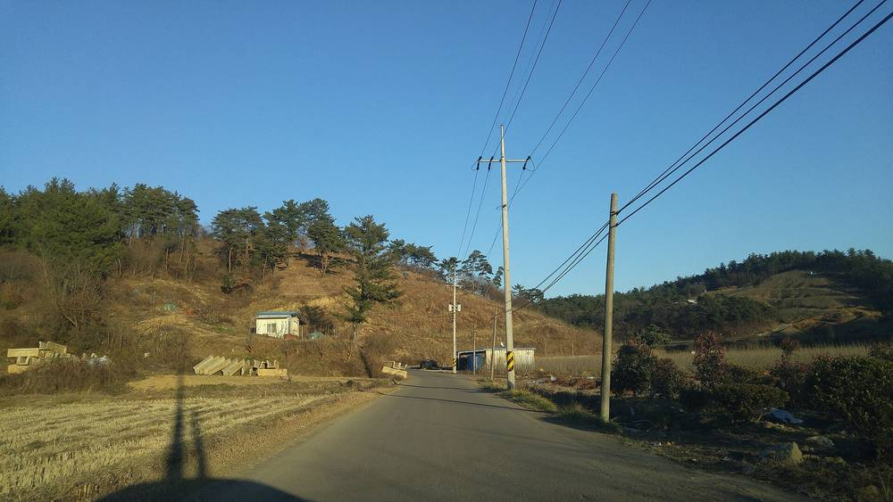
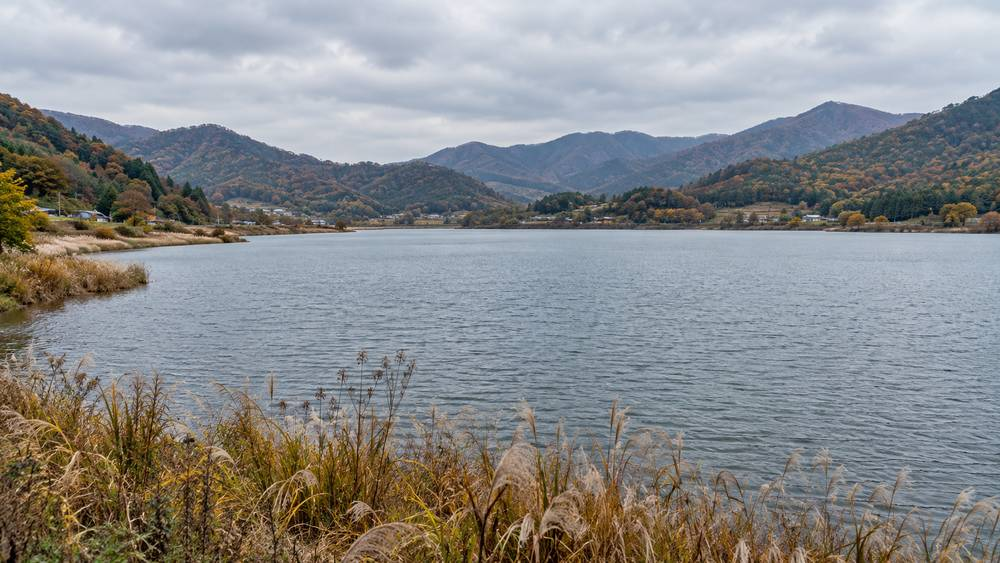
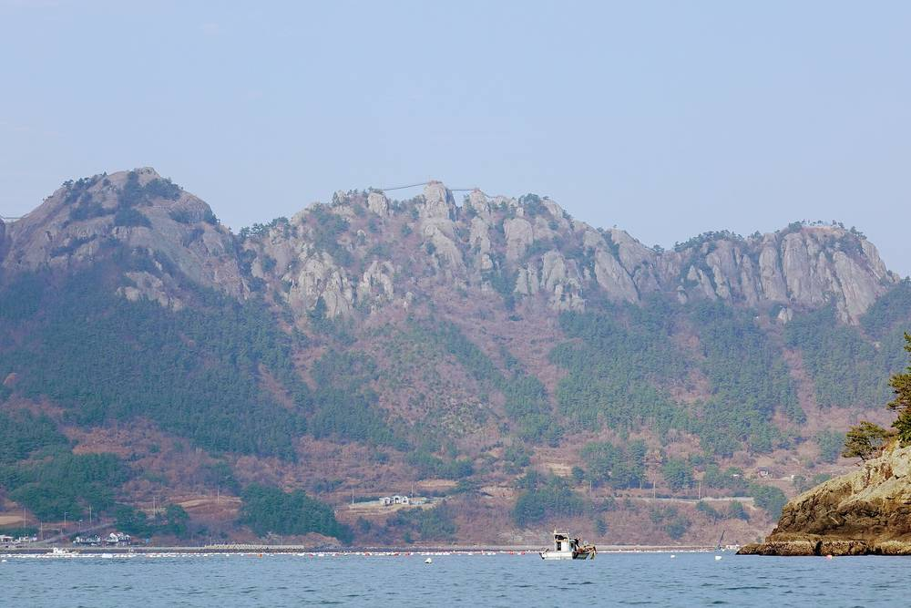
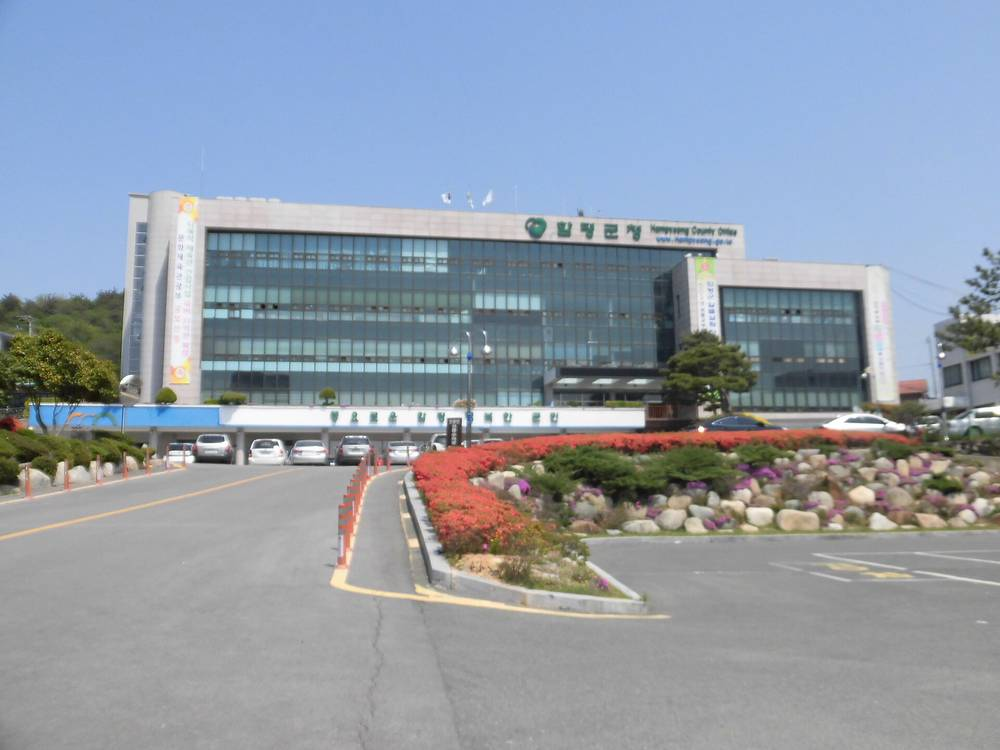
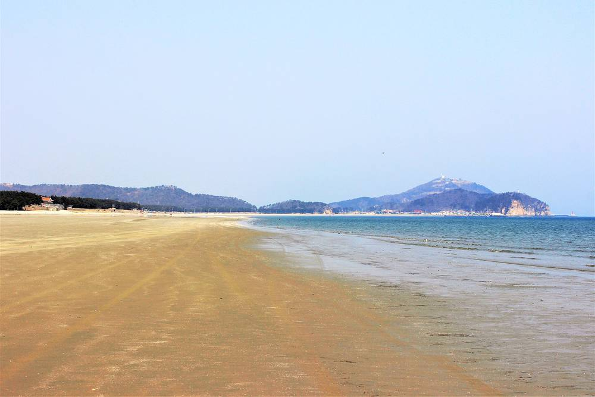
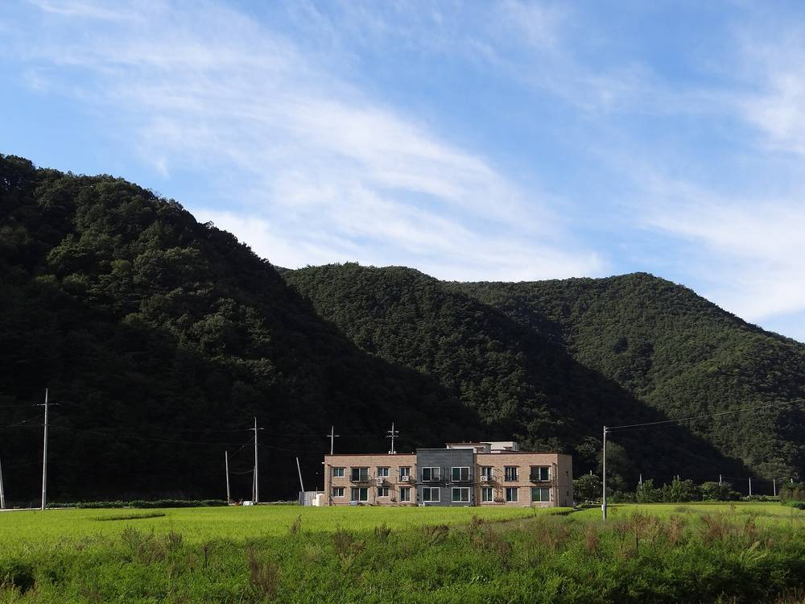
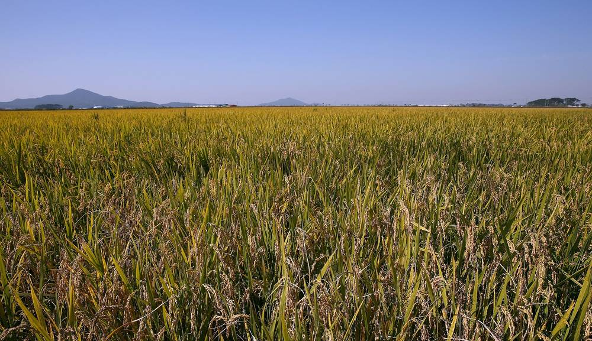
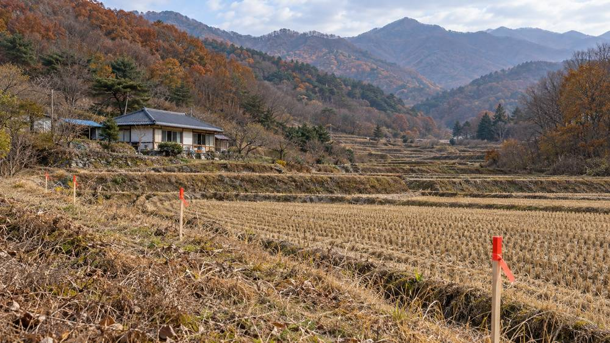

사회
전력망 확충 필요엔 71.6% 공감, 우리 동네 건설엔 45.4%만 동의…고창 신고창변전소는 주민 유치위원회로 81일 만에 입지 확정
한전, 국회 전력망 확충 대토론회서 성인 1,400명 인식조사 공개…주민이 꼽은 수용 조건은 지속 소득·수익 공유, 독일은 송전망 계획 대비 5,957㎞ 미달

부안군 공론화위원회 출범…해상풍력 송전선로 갈등, 주민대표 5명 포함 13명이 정책 권고안 마련
서남권 해상풍력 공동접속설비 입지·주민피해 논의…지난 4월 군과 대책위가 공론화 합의, 조례·위원 구성 거쳐 첫 회의

영농형 태양광 실증 29건 중 24건에서 수확량 줄어…법 시행 앞두고 "농가 소득 보장 장치가 먼저"
농식품부 청주 '상생 한마당'에 220여 명…당진 감자 44.3% 감소, 농지 일시사용 허가는 최장 8년에서 23년으로

시민·사회연대경제 조직이 함께 출자하는 '가치금융신협' 설립 추진…11일 국회서 포럼
사회주택·의료돌봄·재생에너지에 자금 공급 구상…국회의원 5명 공동 주최, 행안부·신협중앙회 후원

서울 대단지 아파트, 관리규약 들어 베란다 태양광 막았지만…15곳 중 14곳 규약엔 금지 조항 없어
시사IN·플랜1.5, 전기 많이 쓰는 1,000세대 이상 131곳에 물으니 68곳 불허…강남 3구 22곳 중 20곳 불허, 서울시 표준규약은 서약서 내면 동의하는 항목

벌집·합선 방치된 경로당 옥상 태양광…경남 사회적협동조합이 점검 인력 솔라마스터 16명 길러
모두의경제 사회적협동조합, 올해 발전소 100곳 방문 점검 목표…2019년 설치된 창원 진동면 경로당 설비는 첫 전문가 점검, 지역 공공 에너지 관리 일자리로 키우자는 구상

국회서 에너지 기본권 토론회…요금 지원 넘어 최소 보장기준·참여권·편익공유권 법제화 제안
서왕진 의원 주최, 고재경 환경정의 공동대표는 에너지전환 참여권·정보권·편익공유권, 김재경 에너지경제연구원 선임연구위원은 기본에너지·공급중단 방지의 에너지법 명시 제안

동서울변전소 HVDC 변환소 증설 주민협의체 연장…16차례 논의에도 결론 못 내
두 달 운영 예정이던 협의체 기간 넘겨 추가 회의…하남시·주민 "전자파 우려, 사업지 옮겨야", 전력당국 "옮기면 사업 기간 늘어" 신중

공공임대 아파트 태양광, 쓰고 남은 전기로 관리비 깎는다…LH, 세종 산울마을 4단지 238가구에 공동주택 첫 요금상계
태양광 246kW로 월 사용량의 약 49.1% 생산…LH "가구당 월평균 약 8,000원 추가 절감 기대", ZEB 5등급 이상 단지로 확대 검토

이격거리 규제 풀린 서부경남 태양광 허가 급증…진주 70건 수준에서 올해 약 200건, 임차농·주민 갈등에 지자체 고민
사천 신규 허가 신청도 2년 전 147건에서 지난해 170건, 올해 이미 지난해 수준 육박…도로 이격거리 폐지·호남 계통 포화로 사업자 몰려, 주민 반대에도 법령상 허가 나야 하는 경우 있어

나주호 수상태양광 9년 갈등, 찬성 측도 "처음 원한 건 주민참여형"…주민수용성 판단 기준은 여전히 비공개
반대 측 "사업 내용 물으니 설명회 때 말하겠다", 찬성 측 "지금은 기업 주도 사업"…주민 범위·대표·투표·배치안 모두 엇갈려, 전기위원회 보완 기한은 12월 초

섬까지 번진 태양광 사업에 통영 곳곳 주민 반대…경남 1MW 이상 발전사업 허가 신청 올해만 200건
사량도 마을 뒷산 사업 소식에 주민 탄원, 도산면 상촌마을은 시청 앞 집회 열고 허가 거부나 이주 요구…통영시는 법적 결격 없어 거부 어렵다는 입장, 전라도 계통 포화로 경남에 몰린다는 분석

인천시, 수도권매립지 2매립장 상부 154만㎡ 쓰임새 '시민 숙의' 29일 첫발…정부 태양광 제안에 주민 반대
시민 50명 학습마당 시작으로 2027년 1월 정책권고안 마련 계획…태양광·공원 등 활용 방안 아직 정해지지 않아

경기도, 내년 사회연대경제 예산 56.5% 깎은 편성안…경기도사회적경제원 사업비 0원
사회혁신경제국 소관 567억 원에서 247억 원으로, 사업 51개는 31개로…도비 사업은 신청액 절반만 반영, 11월 도의회 심의

경기도, 사회연대경제기본법 시행 앞두고 전담 사회혁신경제국 폐지 추진
조직개편안 입법예고…경제부지사 산하 6개 실·국을 3개로, 경제산업실 분장사무엔 사회연대경제 한 줄만 남아

함평군 사회단체협의회, 8GW 재생에너지 특구 지정 요구 서명운동…11월 12일까지 군민 90% 목표
오민수 협의회장, 특별법 제정·주민주도형 분산에너지 특화지역·RE100 국가산단 유치·이익공유 법적 보장 등 4가지 요구…특구·변전소·산단은 정해진 것 없는 민간 구상

인천 시민사회, 박찬대 시장에 민간 해상풍력까지 조정하라 재차 요구…서해5도 여객선 항로 보호 촉구
인천평화복지연대 입장문, 어업인·섬 주민이 대등하게 참여하는 상설 민관협의체와 '시민참여 바람소득' 요구…인천 앞바다 공공 2GW·민간 5GW 등 7GW 이상 추진, 기존 민관협의회는 공공사업만 다뤄

완주 주민 202명, 신정읍~신계룡 송전선로 입지선정위 결의 무효 확인 소송 3차 변론…주민대표 구성 쟁점
원고 측 "주민대표 30명 중 19명이 그 지역에 살지 않는 지방의원" 주장, 한전은 위원장 선출 영상 대신 사진 제출 방침…4차 변론 11월 5일

부안군, 기본사회센터 신설…2027년부터 태양광 수익 주민 배분 시범사업
지자체 첫 기본사회 전담 부서라고 밝혀…읍·면 유휴부지 조사로 태양광 입지 검토, 2030년까지 기본소득 재원 마련 계획

주택 5호 미만이면 이격거리 보호 못 받아…강릉 귀촌 부부 민박집 90m 앞에 태양광 추진
9월 시행 재생에너지법 시행령, 5호 이상 주거지에만 최대 200m 적용하고 조례로 낮추지도 못하게 해…강릉시는 거리로 규제 어렵다는 입장, 영광 풍력 소음 마을은 4년째 소송


社会
送電網拡充の必要性には71.6%が共感、自分の地域での建設に同意は45.4%のみ…高敞の新高敞変電所は住民の誘致委員会で81日で立地確定
韓国電力、国会の送電網拡充大討論会で成人1,400人の意識調査を公表…住民が挙げた受け入れ条件は継続的な所得・収益共有、ドイツは送電網計画に5,957km届かず
扶安郡、公論化委員会が発足…洋上風力の送電線路をめぐる対立、住民代表5人を含む13人が政策勧告案を作成
西南圏洋上風力の共同接続設備の立地・住民被害を議論…4月に郡と対策委が公論化で合意、条例・委員構成を経て初会議
営農型太陽光の実証29件中24件で収穫量が減少…法施行を前に「農家の所得を守る仕組みが先」
農林畜産食品部が清州で「共生フェア」、約220人参加…唐津のジャガイモは44.3%減、農地一時使用許可は最長8年から23年へ
市民と社会連帯経済の組織が共同出資する「価値金融信協」設立へ…11日に国会でフォーラム
社会住宅・医療介護・再生可能エネルギーに資金を供給する構想…国会議員5人が共催、行政安全部・信協中央会が後援
ソウルの大規模団地、管理規約を理由にベランダ太陽光を拒否…15団地のうち14団地は規約に禁止条項なし
時事IN・プラン1.5、電力多消費の1,000世帯以上131団地に問い合わせると68団地が不許可…江南3区は22団地中20団地が不許可、ソウル市の標準規約は誓約書を出せば同意する項目
ハチの巣・ショートが放置された敬老堂の屋上太陽光…慶南の社会的協同組合が点検人材ソーラーマスター16人を育成
モドゥエ経済社会的協同組合、今年は発電所100カ所の訪問点検が目標…2019年設置の昌原・鎮東面の敬老堂設備は初の専門家点検、地域の公共エネルギー管理の雇用に育てる構想
国会でエネルギー基本権討論会…料金支援を超え最低保障基準・参加権・便益共有権の法制化を提案
ソ・ワンジン議員が主催、環境正義のコ・ジェギョン共同代表はエネルギー転換への参加権・情報権・便益共有権を、エネルギー経済研究院のキム・ジェギョン先任研究委員は基本エネルギーと供給停止防止のエネルギー法明記を提案
東ソウル変電所のHVDC変換所増設をめぐる住民協議体を延長…16回の話し合いでも結論出ず
2カ月の予定だった協議体の期間を過ぎて追加会議へ…河南市・住民「電磁波が心配、事業地を移すべき」、電力当局「移せば事業期間が延びる」と慎重
公共賃貸マンションの太陽光、使い切れなかった電気で管理費を減らす…LH、世宗サヌル村4団地238世帯で共同住宅初の料金相殺
太陽光246kWで月使用量の約49.1%を発電…LH「1世帯当たり月平均約8,000ウォンの追加節減を期待」、ZEB5等級以上の団地への拡大を検討
離隔距離規制が緩和された慶尚南道西部で太陽光の許可が急増…晋州は70件程度から今年約200件、小作農・住民との対立に自治体が苦慮
泗川の新規許可申請も2年前の147件から昨年170件、今年すでに昨年並みに迫る…道路の離隔距離廃止と湖南の系統飽和で事業者が殺到、住民が反対しても法令上許可せざるを得ない場合も
羅州湖の水上太陽光、9年に及ぶ対立…賛成側も「最初に望んだのは住民参加型」、住民受容性の判断基準はなお非公開
反対側「事業内容を尋ねると説明会で話すと」、賛成側「今は企業主導の事業」…住民の範囲・代表・投票・配置案のすべてで食い違い、電気委員会の補完期限は12月初め
島にまで広がる太陽光事業に統営の各地で住民が反対…慶南の1MW以上の発電事業許可申請、今年だけで200件
蛇梁島では集落の裏山の計画に住民が嘆願、道山面・上村集落は市庁前で集会を開き許可拒否か移住を要求…統営市は法的な欠格事由がなく拒否は難しいとの立場、全羅道の系統飽和で慶南に集まるとの分析
仁川市、首都圏埋立地第2埋立場の上部154万㎡の使い道を「市民熟議」で 29日に第一歩…政府の太陽光案に住民は反対
市民50人の学習会を皮切りに2027年1月に政策勧告案をまとめる計画…太陽光・公園など活用策はまだ決まらず
京畿道、来年の社会連帯経済予算を56.5%削減する編成案…京畿道社会的経済院の事業費は0ウォン
社会革新経済局の所管予算は567億ウォンから247億ウォンに、事業数は51から31に…道費事業は申請額の半分のみ反映、11月に道議会で審議
咸平郡社会団体協議会、8GW再生可能エネルギー特区の指定を求める署名運動…11月12日までに郡民90%が目標
オ・ミンス協議会長、特別法の制定・住民主導型分散エネルギー特化地域・RE100国家産業団地の誘致・利益共有の法的保障など4項目を要求…特区・変電所・産業団地は何も決まっていない民間の構想
仁川の市民社会、パク・チャンデ市長に民間の洋上風力まで調整するよう再び要求…西海5島の旅客船航路の保護を訴え
仁川平和福祉連帯が声明、漁業者・島の住民が対等に参加する常設の官民協議体と「市民参加の風所得」を要求…仁川沖では公共2GW・民間5GWなど7GW以上を推進、既存の官民協議会は公共事業のみ扱う
完州の住民202人、新井邑～新鶏龍送電線路の立地選定委員会決議の無効確認訴訟で第3回弁論…住民代表の構成が争点
原告側「住民代表30人のうち19人がその地域に住んでいない地方議員」と主張、韓電は委員長選出の映像の代わりに写真を提出する方針…第4回弁論は11月5日
扶安郡が基本社会センターを新設…2027年から太陽光の収益を住民に配分するモデル事業
自治体初の基本社会専担部署と説明…邑・面の遊休地調査で太陽光の立地を検討、2030年までにベーシックインカムの財源確保を計画
住宅5戸未満なら離隔距離の保護なし…江陵に帰村した夫婦の民泊の90m先で太陽光計画
9月施行の再生可能エネルギー法施行令、5戸以上の住居地にのみ最大200mを適用し条例での引き下げも認めず…江陵市は距離での規制は難しいとの立場、霊光の風力騒音の村は4年目の訴訟
社会
71.6%认同需扩建电网，但只有45.4%同意建在自家附近…高敞新高敞变电站靠居民招商委员会81天确定选址
韩国电力公社在国会电网扩建大讨论会上公布1,400名成年人认知调查…居民提出的接受条件是持续收入与收益共享，德国输电网建设比计划少5,957公里
扶安郡公论化委员会成立…围绕海上风电输电线路的矛盾，由含5名居民代表在内的13人制定政策建议方案
讨论西南圈海上风电共同接入设施的选址与居民受损问题…今年4月郡政府与对策委就公论化达成一致，经条例制定、委员遴选后召开首次会议
农光互补示范29项中24项减产…韩国法律施行前呼声:"先建立保障农户收入的机制"
农林畜产食品部在清州举办"共生大会",约220人出席…唐津土豆减产44.3%,农地临时使用许可从最长8年延至23年
首尔大型小区以管理规约为由拒绝阳台光伏…15个小区中14个的规约并无禁止条款
《时事IN》与Plan 1.5调查耗电量大的千户以上131个小区，68个不允许安装…江南3区22个小区中20个不允许，首尔市标准规约将其列为提交承诺书即可同意的事项
敬老堂屋顶光伏蜂巢、短路无人管…庆南社会合作社培养16名太阳能大师巡检人员
Modu经济社会合作社今年目标走访巡检100座电站…昌原镇东面一处2019年安装的敬老堂设施首次接受专业检查，构想发展为地方公共能源管理岗位
国会举行能源基本权讨论会…提议超越电费补贴，将最低保障标准、参与权和利益共享权写入法律
议员Seo Wang-jin主办，环境正义共同代表Ko Jae-kyung提出能源转型参与权、知情权和利益共享权，能源经济研究院高级研究委员Kim Jae-kyung建议在能源法中写明基本能源和防止断供
公租公寓光伏用余电抵减物业费…LH在世宗山蔚村4区238户首次在共同住宅实施电费抵扣
246kW光伏发电量约占月用电量的49.1%…LH"预计每户每月平均再省约8,000韩元"，研究推广至ZEB 5级以上小区
间距限制放宽后庆尚南道西部太阳能许可激增…晋州从约70件增至今年约200件，佃农与居民矛盾令地方政府为难
泗川新增许可申请也从两年前的147件增至去年的170件，今年已接近去年水平…道路间距规定取消、湖南电网饱和致业者涌入，即使居民反对，按法令有时仍须发放许可
罗州湖水上光伏冲突已9年，赞成方也称“最初要的是居民参与型”…居民接受度判断标准仍未公开
反对方称“询问项目内容，只说到说明会再讲”，赞成方称“现在是企业主导项目”…居民范围、代表、投票、布置方案全都各执一词，电气委员会补充期限为12月初
太阳能项目蔓延到海岛，统营多地居民反对…庆南1MW以上发电项目许可申请今年已达200件
蛇梁岛村后山项目引发居民请愿，道山面上村居民在市厅前集会要求不予许可或让其搬迁…统营市称无法律上的不合格理由难以拒绝，分析认为全罗道电网饱和使项目涌向庆南
仁川市就首都圈垃圾填埋场第二填埋场上部154万平方米用途启动"市民协商"，29日迈出第一步——政府提议建太阳能，居民反对
以50名市民参加的学习会为起点，计划于2027年1月形成政策建议案；太阳能、公园等利用方案尚未确定
京畿道明年社会连带经济预算编成案削减56.5%…京畿道社会经济院事业费为0韩元
社会革新经济局所管预算由567亿韩元降至247亿韩元，项目由51个减至31个…道费项目仅反映申请额的一半，11月道议会审议
咸平郡社会团体协议会发起签名运动，要求指定8GW可再生能源特区…目标在11月12日前征集90%郡民签名
协议会会长Oh Min-su提出制定特别法、指定居民主导型分布式能源特色区域、引进RE100国家产业园区、以法律保障利益共享等4项要求…特区、变电站和产业园区均未确定，仍是民间构想
仁川公民社会再次要求市长Park Chan-dae协调民间海上风电项目…呼吁保护西海五岛客轮航线
仁川和平福利联合发表声明，要求设立渔民和岛民平等参与的常设官民协商机构及"市民参与风力收入"机制…仁川近海正推进公共2GW、民间5GW等7GW以上项目，现有官民协议会只涉及公共项目
完州202名居民就新井邑至新鸡龙输电线路选址委员会决议无效确认诉讼进行第三次辩论…居民代表构成成为焦点
原告方称30名居民代表中有19名是不住在当地的地方议员，韩电拟以照片代替委员长选举录像提交…第四次辩论定于11月5日
住宅不足5户则不受间隔距离保护…江陵返乡夫妇民宿90米外拟建太阳能电站
9月施行的可再生能源法施行令只对5户以上居住地适用最多200米间隔，且不允许以条例下调…江陵市称难以用距离加以限制，灵光风电噪音村诉讼已进入第4年
Society
71.6% Agree Korea Needs More Grid but Only 45.4% Accept It Nearby; Residents' Own Committee Secures Gochang Substation Site in 81 Days
KEPCO releases a survey of 1,400 adults at a National Assembly grid forum; residents name steady income and revenue-sharing as conditions for acceptance, while Germany fell 5,957km short of its transmission plan
Buan County Launches Public Deliberation Committee Over Offshore Wind Transmission Line Dispute; 13 Members Including Five Resident Representatives to Draft Policy Recommendations
Panel to discuss the siting of the shared grid connection for southwestern offshore wind and harm to residents; the county and the opposition committee agreed on deliberation in April, followed by an ordinance, member selection and a first meeting
Crop Yields Fell in 24 of 29 Agrivoltaic Pilots — Farmers Say Income Safeguards Must Come First as Korea's New Law Nears
About 220 attend agriculture ministry forum in Cheongju; Dangjin potatoes down 44.3%, while farmland-use permits stretch from up to 8 years to 23
Push to launch 'Value Finance Credit Union' co-owned by citizens and social solidarity economy groups; forum at National Assembly on the 11th
Plan to channel funds to social housing, health and care, and renewable energy; co-hosted by five lawmakers and backed by the interior ministry and the National Credit Union Federation
Seoul mega-complexes cite management bylaws to block balcony solar, but 14 of 15 have no such ban in their bylaws
SisaIN and Plan 1.5 asked 131 high-consumption complexes of 1,000-plus households and 68 refused; 20 of 22 refused in Seoul's three Gangnam districts, while the city's standard bylaw treats balcony solar as an item to be approved once a safety pledge is filed
Wasp nests and short circuits on neglected senior-centre rooftop solar: a Gyeongnam social cooperative trains 16 Solar Masters to inspect them
Modu Economy Social Cooperative aims to visit and inspect 100 plants this year; a senior-centre system installed in 2019 in Jindong-myeon, Changwon, got its first expert check, and the cooperative wants the work to become local public energy-management jobs
National Assembly forum on energy rights proposes writing minimum guarantees, participation and benefit-sharing rights into law, beyond bill subsidies
Hosted by lawmaker Seo Wang-jin; Ko Jae-kyung of Environmental Justice proposed rights to participate in, be informed about and share the benefits of the energy transition, and Kim Jae-kyung of the Korea Energy Economics Institute called for basic energy and protection from disconnection to be set out in the Energy Act
Residents' council on HVDC converter expansion at Dongseoul substation extended after 16 rounds of talks bring no conclusion
The council, meant to run for two months, will hold more meetings; Hanam city and residents want the site moved over electromagnetic-field concerns, while power authorities are wary that relocation would lengthen the project
Public rental flats use surplus rooftop solar to cut maintenance fees as LH launches its first apartment net billing at Sejong's Sanul Maeul Complex 4, home to 238 households
246kW of solar produces about 49.1% of monthly consumption; LH "expects an extra saving of about 8,000 won per household a month" and is considering extending the scheme to ZEB grade 5 or better complexes
Solar permits surge in western South Gyeongsang after setback rules are eased, with Jinju going from about 70 last year to some 200 this year as conflicts with tenant farmers and residents trouble local governments
New permit applications in Sacheon rose from 147 two years ago to 170 last year and are already near that level this year; the scrapping of road setbacks and grid saturation in the Honam region are drawing developers, and permits must sometimes be granted despite residents' objections
Nine years into the Naju Lake floating solar dispute, even supporters say "what we first asked for was resident participation"; criteria for judging local acceptance still undisclosed
Opponents say questions about the project were put off until a briefing, supporters say it is now company-led; residents' scope, representation, voting and layout all disputed, with the Electricity Commission's deadline in early December
As solar projects spread to islands, residents across Tongyeong push back; applications for 1MW-plus generation licences in South Gyeongsang reach 200 this year alone
Villagers on Saryangdo petition against a plan on the hill behind their village, while Sangchon villagers rally at city hall demanding refusals or relocation; city says it cannot refuse lawful applications, and the industry points to a saturated grid in the Jeolla provinces
Incheon opens citizens' deliberation on 1.54 million m² atop Sudokwon Landfill No. 2 on the 29th, as government solar proposal meets residents' opposition
A 50-member citizen learning session starts a process aimed at a policy recommendation in January 2027; whether the land goes to solar, a park or other uses is still undecided
Gyeonggi Province drafts 56.5% cut to next year's social and solidarity economy budget, with zero program funding for its Social Economy Center
Budget under the Social Innovation and Economy Bureau falls from 56.7 billion won to 24.7 billion won and programs from 51 to 31; province-funded programs get only half of what was requested; Provincial Council review in November
Residents and civic groups demand Gunsan's Oseongsan solar plant be scrapped, citing flawed consent process
Residents reaffirm opposition by secret ballot and form emergency committee; nine civic groups call for review and permitting to stop
Gyeonggi Province moves to abolish its dedicated social economy bureau ahead of Korea's new Social and Solidarity Economy Act
Reorganization plan pre-announced: six offices under the economic vice governor cut to three, and the social economy reduced to a single line in the new economy office's duties
Hampyeong civic groups' council launches petition for an 8GW renewable energy special zone, aiming for 90% of residents by November 12
Council chair Oh Min-su makes four demands including a special act, a resident-led distributed energy zone, an RE100 national industrial complex and legal guarantees for benefit-sharing; the zone, substation and complex remain an undecided civic proposal
Incheon civil society again urges Mayor Park Chan-dae to coordinate private offshore wind too, calls for protecting ferry routes to the five West Sea islands
Incheon Peace and Welfare Solidarity statement seeks a standing public-private council where fishers and islanders take part as equals and a "citizen wind income" scheme; over 7GW, including 2GW public and 5GW private, is planned off Incheon while the existing council covers only public projects
202 Wanju residents hold third hearing in suit to void siting committee decision on Sinjeongeup-Singyeryong power line, with resident-representative makeup at issue
Plaintiffs claim 19 of 30 resident representatives were local councillors who do not live in the area; KEPCO plans to submit photos instead of video of the chair's election; fourth hearing set for Nov. 5
Buan County sets up Basic Society Center and plans pilot sharing solar revenue with residents from 2027
County calls it the first local government unit dedicated to basic society; idle land in each town to be surveyed for solar sites, with basic income funding targeted by 2030
Homes in clusters of fewer than five lose setback protection as solar is planned 90m from Gangneung couple's guesthouse
Renewable energy decree in force since September applies setbacks of up to 200m only where there are five or more homes and bars local ordinances from going lower; Gangneung says it cannot regulate by distance, while a Yeonggwang village hit by wind turbine noise is in its fourth year of litigation
Korea Green Economy Fund social cooperative launched to provide seed loans for citizen solar plants
Founding meeting held in Busan on October 25, 2024, aiming for more than 1,000 members within two years